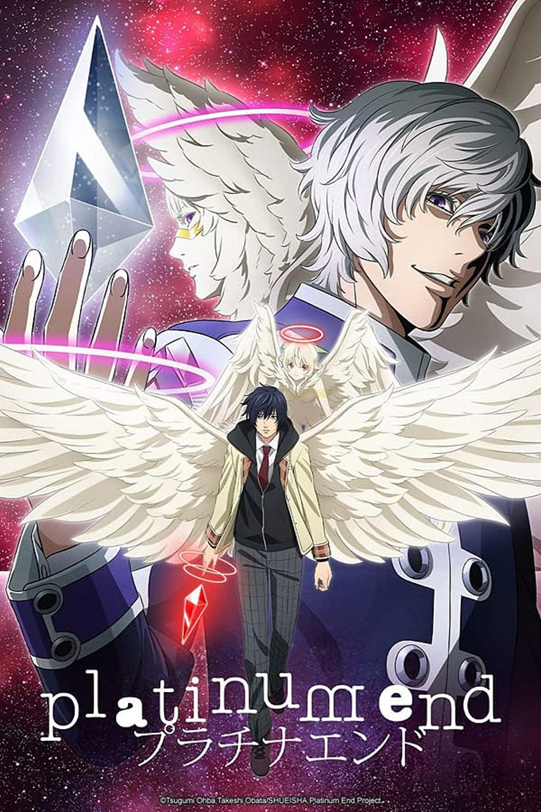

|
Title |
Release Date |
|
Kono Oto Tomare! Sounds of Life |
April 6, 2019 |
| The sole individual from a secondary school Koto club assembles an impossible team, including a misjudged delinquent and a melodic wonder, to figure out how to play the customary string instrument for a music rivalry. Read More |
|
No Game No Life |
April 9, 2014 |
| The series follows a gathering of human gamers looking to beat the divine force of games at a progression of prepackaged games to usurp the god's high position. Read More |
|  |
Platinum End |
October 8, 2021 |
| A youngster is enrolled by a heavenly messenger into a fight to turn into the following God. Read More |
 |
To Your Eternity |
April 12, 2021 |
| A forlorn kid meandering the Arctic districts of North America meets a wolf, and the two become quick companions, contingent upon one another to endure the brutal climate. However, the kid has a set of experiences, and the wolf is more going on behind the scenes too. Read More |
 |
Fire Force |
July 5. 2019 |
| A godlike fireman force is shaped to manage extraordinary fire occurrences. Read More |